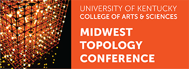

SPRING 2013
SATURDAY MAY 11 - SUNDAY MAY 12
Continuing the now decades-long tradition, the Spring 2013 Midwest Topology Seminar was held May 11 and 12, 2013 at the University of Kentucky.
Speakers
Mohammed Abouzaid - Columbia University
Lagrangian immersions and the Floer homotopy type
A conjecture of Arnold would imply that every exact Lagrangian in a cotangent bundle is isotopic to the zero section through Lagrangian embeddings. We now know that every such Lagrangian is homotopy equivalent to the zero section. I will explain how, combining the h-principle with the spectrum-valued invariants introduced by T. Kragh, one can hope to show that such Lagrangians are in fact isotopic to the zero section through Lagrangian immersions. I will discuss partial results obtained with Kragh, constraining the Lagrangian isotopy class of Lagrangians embeddings.
Michael Ching - Amherst College
Some examples of homotopic descent
I will describe a collection of theorems that exemplify homotopic descent. Each of these theorems says that a certain Quillen adjunction is `comonadic' in a homotopical sense: that is, it identifies the homotopy theory on one side of the adjunction with the homotopy theory of coalgebras over a certain comonad that acts on the other side. I will say what I mean by the homotopy theory of such coalgebras and give a Barr-Beck comonadicity condition.
The examples I am interested in concern operad theory and Goodwillie calculus. One result identifies the homotopy theory of 0-connected algebras over an operad of spectra with that of 0-connected divided power coalgebras over the Koszul dual operad. (This is joint work with John E. Harper.) Another describes the homotopy theory of n-excisive homotopy functors (between categories of spaces and/or spectra) in terms of appropriate comonads. (This is joint work with Greg Arone.) In the case of functors from spaces to spectra, and algebras over the commutative operad, there is a close connection between these two examples, which I shall describe.
John Lind - Johns Hopkins University
Equivariantly Twisted Cohomology Theories
Twisted K-theory is a cohomology theory whose cocycles are like vector bundles but with locally twisted transition functions. If we instead consider twisted vector bundles with a symmetry encoded by the action of a compact Lie group, the resulting theory is equivariant twisted K-theory. This subject has garnered much attention for its connections to conformal field theory and representations of loop groups. While twisted K-theory can be defined entirely in terms of the geometry of vector bundles, there is a homotopy-theoretic formulation using the language of parametrized spectra. In fact, from this point of view we can define twists of any multiplicative generalized cohomology theory, not just K-theory. The aim of this talk is to explain how this works, and then to propose a definition of equivariant twisted cohomology theories using a similar framework. The main ingredient is a structured approach to multiplicative homotopy theory that allows for the notion of a G-torsor where G is a grouplike A∞ space.
Charles Rezk - University of Illinois at Urbana-Champaign
p-isogeny modules, and calculations in multiplicative stable homotopy at height 2
I will describe two calculations, obtained using the theory power options for Morava E- theory at height 2: (1) The E- theory of the Bousfield-Kuhn spectrum (joint work with Mark Behrens) and (2) Twists of E-cohomology.
Kirsten Wickelgren - Harvard University
Massey products in Galois cohomology via étale homotopy types
The Milnor conjecture identifies the cohomology ring H*(Gal(k/k), Z/2) with the tensor algebra of k× mod the ideal generated by x⊗(1-x) for x in k - {0,1} mod 2. In particular, x∪(1-x) vanishes, where x in k× is identified with an element of H1. We show that order n Massey products of n-1 factors of x and one factor of 1-x vanish by embedding P1 - {0,1,∞} into its Picard scheme, and applying obstruction theory to the resulting map on étale homotopy types. This also identifies Massey products of the form <1-x, x, … , x , 1-x> with f ∪(1-x), where f is a certain cohomology class which arises in the description of the action of Gal(k/k) on π1et(P1 - {0,1,∞}).
Bruce Williams - University of Notre Dame
K-theory of Endomorphisms
Schedule
|
SATURDAY |
|
|---|---|
| 9:00-9:30 | Coffee |
| 9:30-10:30 | Mohammed Abouzaid |
| 10:30-11:00 | Coffee Break |
| 11:00-12:00 | Charles Rezk |
| 2:00-3:00 | John Lind |
| 3:00-3:30 | Coffee Break |
| 3:30-4:30 | Kirsten Wickelgren |
|
SUNDAY |
|
| 9:00-9:30 | Coffee |
| 9:30-10:30 | Bruce Williams |
| 10:30-11:00 | Coffee Break |
| 11:00-12:00 | Michael Ching |
Participants
|
Name |
Institution |
|---|---|
|
Scott Bailey |
Clayton State University |
|
Philip Egger |
Northwestern University |
|
Tony Elmendorf |
Purdue University Calumet |
|
Robert Bruner |
Wayne State University |
|
Martin Frankland |
University of Illinois at Urbana-Champaign |
|
Zhen Huan |
University of Illinois at Urbana and Champaign |
|
Rolf Hoyer |
University of Chicago |
|
Angelica Osorno |
University of Chicago |
|
Peter Nelson |
University of Illinois at Urbana-Champaign |
|
JIBLAL UPADHYA |
NEW MEXICO STATE UNIVERSITY, LAS CRUCES, NEW MEXICO |
|
Jonathan Thompson |
University of Kentucky |
|
Bill Robinson |
University of Kentucky |
|
Marzieh Bayeh |
University of Regina |
|
Sarah Yeakel |
UIUC |
|
Inna Zakharevich |
University of Chicago |
|
Jim McClure |
Purdue |
|
Mona Merling |
UChicago |
|
Xiaoguang Jiang |
St. John's University |
|
Henry Yi-Wei Chan |
The University of Chicago |
|
Niles Johnson |
Ohio State Newark |
|
Peter May |
University of Chicago |
|
Robert Bruner |
Wayne State University |
|
Anna Marie Bohmann |
Northwestern University |
|
David Copeland Johnson |
University of Kentucky (retired) |
|
Arnav Tripathy |
Stanford |
|
Sean Tilson |
Wayne State University |
|
Michael Catanzaro |
Wayne State University |
|
Cary Malkiewich |
Stanford University |
|
Amelia Tebbe |
University of Illinois Urbana-Champaign |
|
Andrew Wilfong |
University of Kentucky |
|
Howard Marcum |
Ohio State University at Newark |
|
Peter Ulrickson |
Notre Dame |
|
Augusto Stoffel |
University of Notre Dame |
|
Jialin Chen |
University of Illinois at Chicago |
|
Serge Ochanine |
University of Kentucky |
|
John Mosley |
University of Kentucky |
|
John Mack |
Univ of Kentucky |
|
Ryan Curry |
University of Kentucky |
|
John E. Harper |
Purdue University |
Funding for this meeting comes from the University of Kentucky College of Arts and Sciences, Vice President for Research, and Department of Mathematics.
MIDWEST TOPOLOGY SEMINAR
114 White Hall Classroom Building
140 Patterson Drive
Lexington, KY 40506-0025
CONTACT INFORMATION
Kate Ponto
kate.ponto@uky.edu
Department of Mathematics
University of Kentucky
Bert Guillou
bertguillou@uky.edu
Department of Mathematics
University of Kentucky